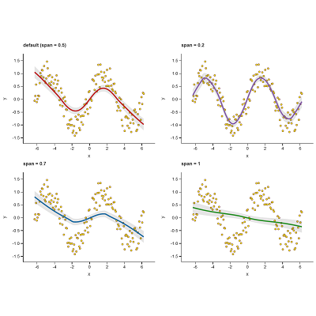
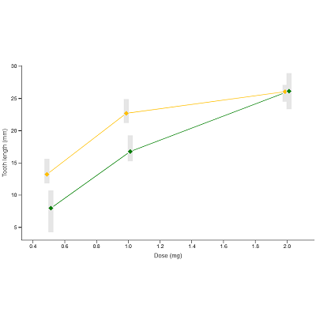
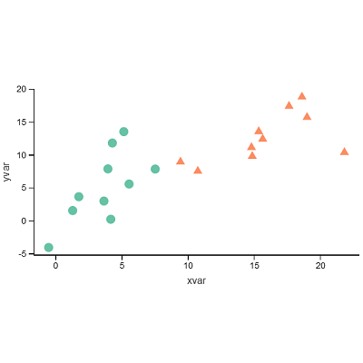
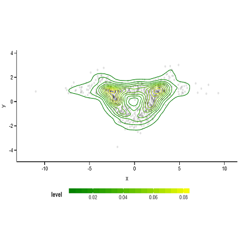
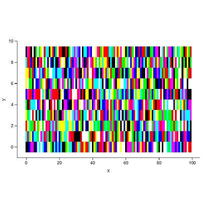
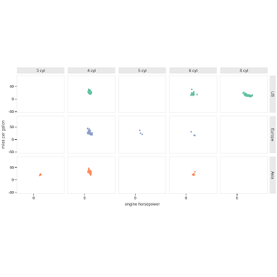
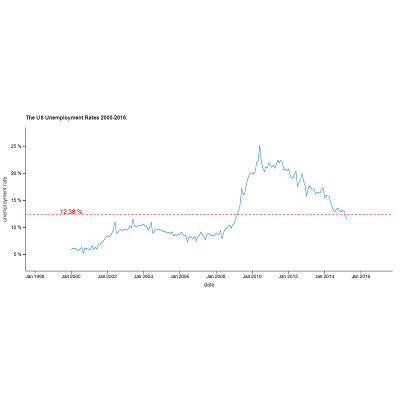
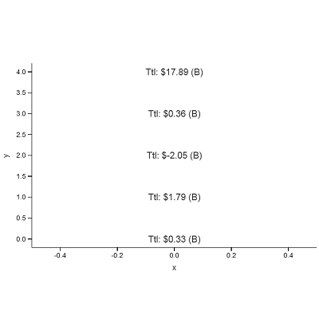
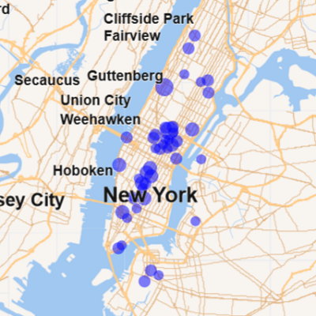

Quickstart
User guide
Correlation plot
Set of images in a grid
Collection of plots on one figure

Distributions

Error bars

Scatter plot
Smoothing line

2D density
Contours

Image specified by a ndarray
ndarray
Draw a PNG image
Manual color and fill scales
Location and shape scales
Smooth color scale
Color and fill scales

Grid and wrap facets
Dodge position
Jitter position
Legend layout and axis presentation options

Formatting labels on plots

The label_format parameter in geom_text()
label_format
geom_text()
Tooltip customization
Export plot to a file

BigQuery GIS on Kaggle